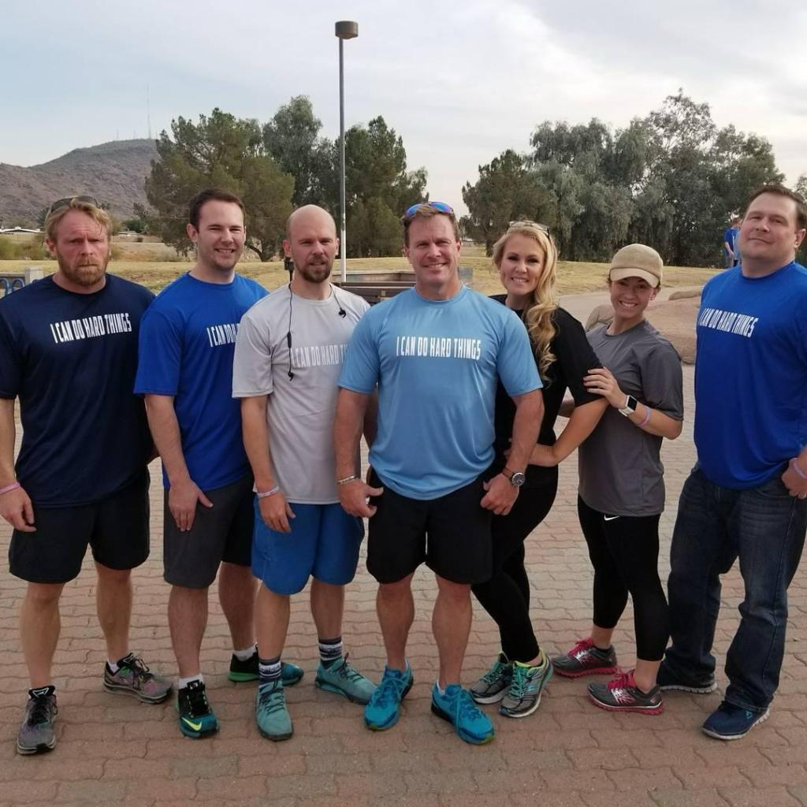
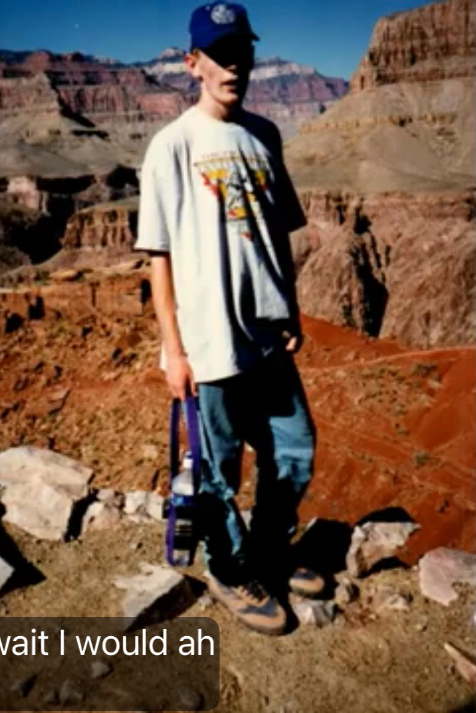
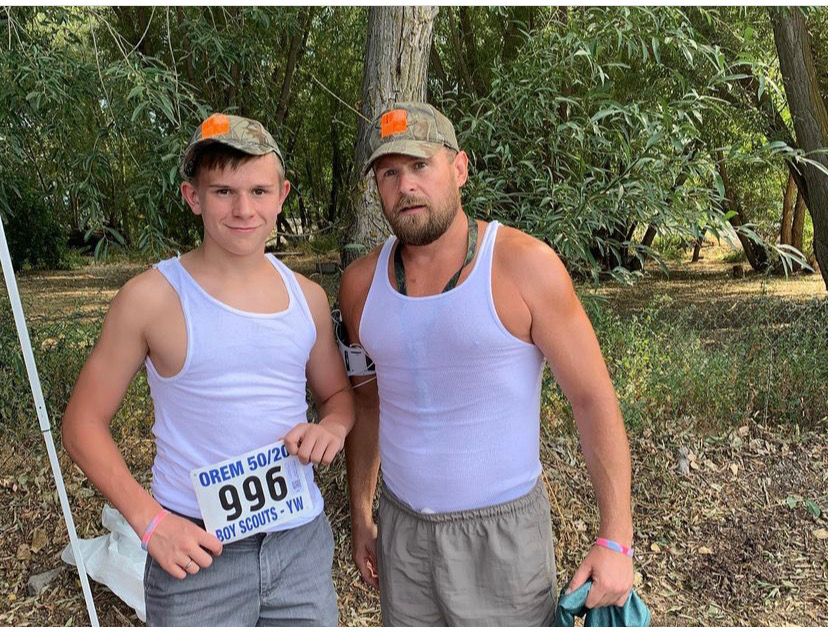
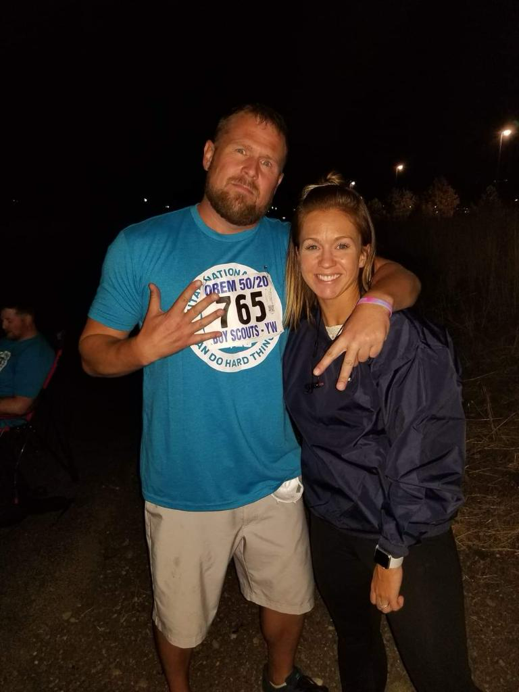

I learned my dad was a nut longer than 11 years ago… must run in the family!

As long as I can remember my dad instilled the importance of doing “hard things” (although we didn’t have the catch phrase yet). He recounted stories of conditioning and training that mostly went over my head at the time, but there was one story that always stood out to me. He used to tell me about when he and his family had hiked the Grand Canyon when he was about 18. Being the spry lad he was, he reached the bottom before everyone else then decided to go back up and meet the group, which in the story turned into multiple trips carrying bags up and down for others in the trip. This lesson always reminds me of who my dad was at his core. He loved to push himself and loved to help others, laughing and teasing all the way.

After we lost Jeff pretty much the whole family needed to get a piece of the 50/20, dad was no exception. He even took it as far as adding his own section of the course ;)
I look forward to celebrating and grieving them this week and can’t wait to watch Ryan’s progress as he crosses the state! We will be there at the Grand Canyon for some totally optional hard thing practice.
I didn’t get to hike the Grand Canyon with dad or walk the 50/20 with Jeff, but each time I do a hard thing I know they are there with me.
Contributed by Samantha, David's eldest daughter.


Comments for This Story